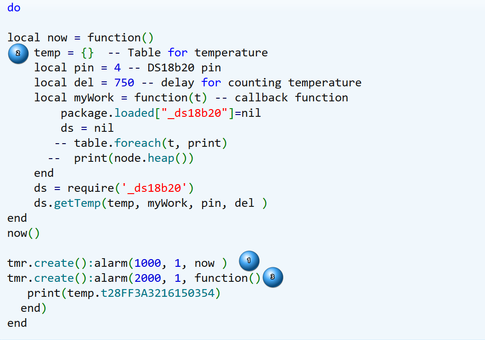
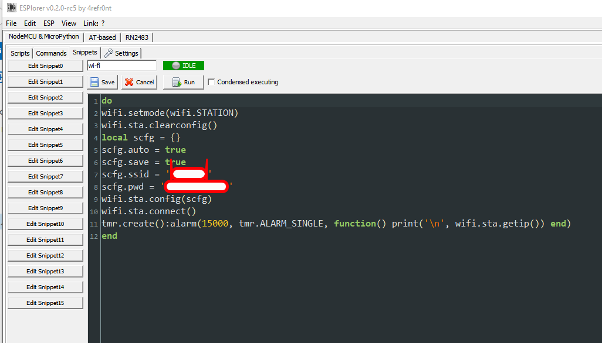
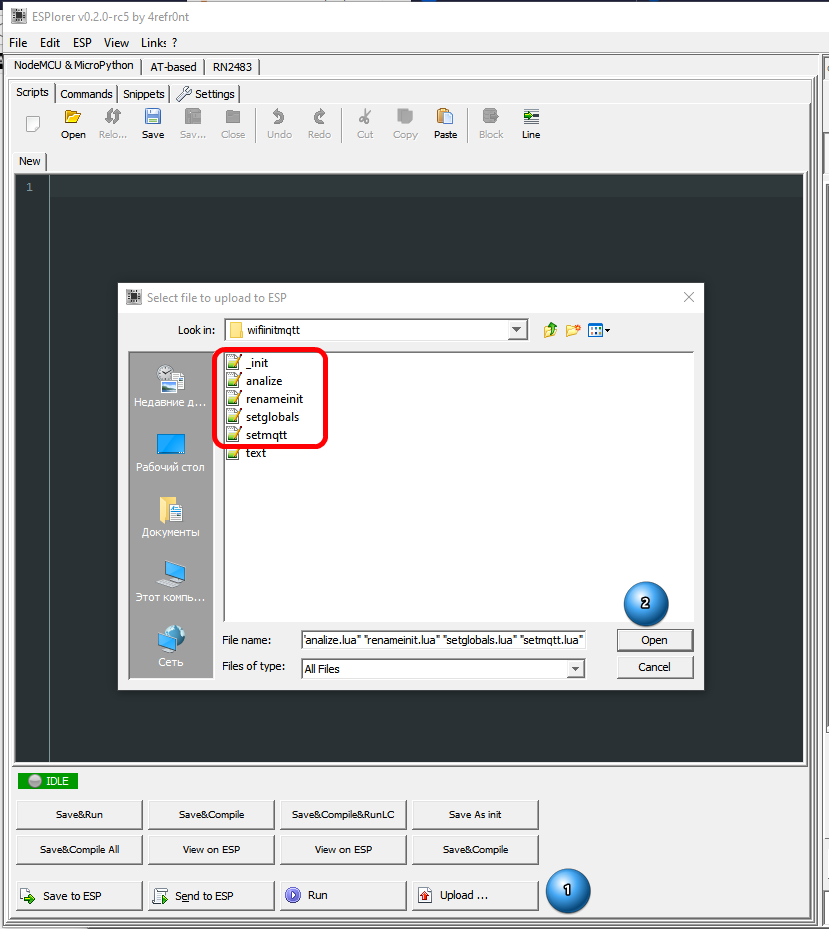
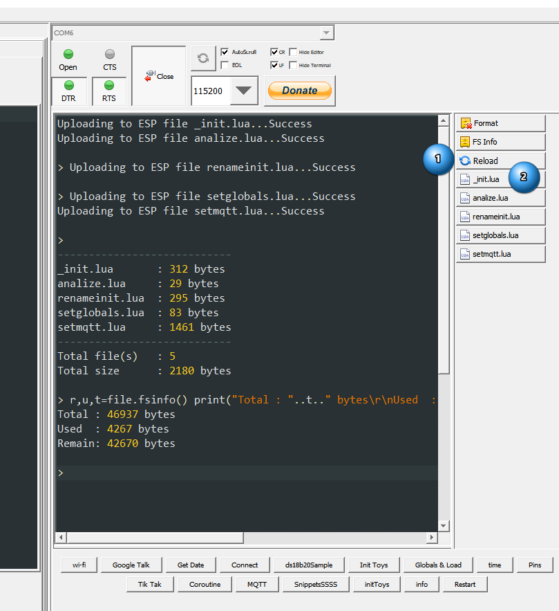
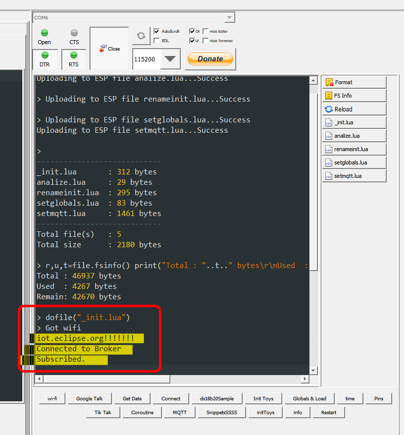
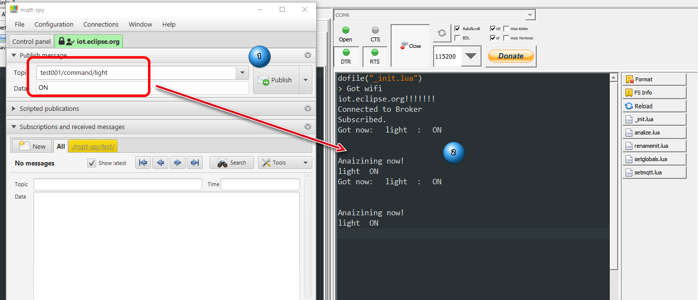

Форум>Электроника>ESP8266, ESP32>
ESP-8266/ESP32 NodeMCU Lua: азы программирования.
Тема в разделе "ESP8266, ESP32", создана пользователем ИгорьК, 25 июл 2017.
Страница 14 из 76< Назад1←1213141516→76Вперёд >
ИгорьКГуру
Чтобы воспользоваться мой библиотекой в прошивке должен быть модуль 1wire
SmileOfFortune нравится это.
ИгорьК сказал(а): ↑
Чтобы воспользоваться мой библиотекой в прошивке должен быть модуль 1wire
Вот теперь запустилась.
Еще вопрос... как обратиться к результату функции?
ИгорьКГуру
Теперь что касается стандартной библиотек
SmileOfFortune сказал(а): ↑
Еще вопрос... как обратиться к результату функции?
Это вопрос...
Результат - в таблице, как вы хотели.
Дальше придётся писать следующий раздел, напишу будет время.
Последнее редактирование: 24 май 2018
Я конечно не великий программист, но не понятно одно... какой толк от выше написанного, если я не могу оперировать этими данными? как получить доступ к ячейкам таблицы с параметрами датчиков?
ИгорьКГуру
SmileOfFortune сказал(а): ↑
Я конечно не великий программист, но не понятно одно... какой толк от выше написанного, если я не могу оперировать этими данными? как получить доступ к ячейкам таблицы с параметрами датчиков?
Код (C++):
print (tbl.t28FF3A3216150354)
print (tbl.t28FF8ACF63150191)
ИгорьКГуру
У меня складывается впечатление, что Вы не читали книгу Иерусалимски. Это не правильный подход, кроме того, я в первом посте указал, что мои заметки - дополнение к ней, а не замена. В книге написано как обращаться к элементам таблицы.
ИгорьКГуру
Почитайте главу 2.5 Иерусалимски, там все есть.
Как обращаться понятно. Но temp определена только внутри функции... и доступа к ней нет из вне.
ИгорьК сказал(а): ↑
Код (C++):
print (tbl.t28FF3A3216150354)
print (tbl.t28FF8ACF63150191)
Спойлер: Код
now это функция которая обрабатывает датчик и печатает нам значения.
tbl.t28FF3A3216150354 - это имя таблицы и индекс ячейки значение который мы хотим получить. только в данном коде нет такой таблицы.
Я конечно может криво спрашиваю... но вопрос у меня в следующем...
1) есть таблица Temp с параметрами датчиков температуры.
2) есть функция считывания температуры датчиков
Вопрос, как передать значения параметров датчиков температуры в таблицу Temp.
ИгорьКГуру
Данные появляются в таблице после выполнения кода.
Уберите оператор "local" перед ней и она станет доступной за пределами функции.
(Мы говорим о моей библиотеке, там таблица temp.)
Последнее редактирование: 24 май 2018
SmileOfFortune нравится это.
ИгорьКГуру
Пожалуйста, поймите, без чтения книги вы не сможете писать код.
ИгорьК сказал(а): ↑
Пожалуйста, поймите, без чтения книги вы не сможете писать код.
Книга открыта всегда, когда пишу. Но почему-то в некоторых операциях я не могу понять их логику работы. Пример:
Код (C++):
do
local now = function()
temp = {} -- Table for temperature
local pin = 4 -- DS18b20 pin
local del = 750 -- delay for counting temperature
local myWork = function(t) -- callback function
package.loaded["_ds18b20"]=nil
ds = nil
-- table.foreach(t, print)
-- print(node.heap())
end
ds = require('_ds18b20')
ds.getTemp(temp, myWork, pin, del )
end
now()
tmr.create():alarm(1000, 1, now )
tmr.create():alarm(2000, 1, function()
print(temp.t28FF3A3216150354)
end)
end
Если правильно понимаю, чтобы обновить таблицу с температурой, надо запустить NOW. для этого есть таймер на 1000мс. Теперь я хочу, к примеру, чтобы каждые 2 секунды у меня печаталось значение первого датчика. Создаем таймер и просим его печатать. На мой взгляд все логично. Но результат - ничего не печатается кроме NIL. На ардуино нано с этими датчиками нет никаких проблем... а тут... элементарная задача, а решить не получается...
ИгорьКГуру
SmileOfFortune сказал(а): ↑
На ардуино нано с этими датчиками нет никаких проблем... а тут... элементарная задача, а решить не получается...
Вы ошибаетесь, что на ардуино нет проблем. Проблема там есть очень большая, но не бросается в глаза. Библиотека для датчика должна быть асинхронной, поскольку между командой на преобразование и чтением датчика должно пройти до 750 мс. Вы выполняете это требование? Нет? Значит вы читаете "прошлые" показания датчика - показания от предыдущего замера.
Теперь, что не так в вашем коде. Вы до конца его не додумали.

Смотрите, (п .1) вызывает функцию now() каждую секунду.
Ее вызов в (п. 2)
Код (Lua):
temp = {} -- Table for temperature
уничтожает все данные в таблице. Преобразование длится 750 мс. и значит, с учетом вызова этого преобразования каждые 1000 мс - 3/4 времени в таблице будут отсутствовать значения.
Поскольку таймеры - явления асинхронные, практически одновременно с таймером вызова опроса запускается и (п. 3.) таймер чтения данных из таблицы, но с частотой в два раза меньше.
Таким образом, попытка чтения таблицы будет происходить с маленьким запозданием после каждого второго вызова функции запроса температуры. Это значит, что на момент чтения значения датчика в таблице данных не будет.
Вы действовали в типичном ардуиновском стиле, это нормально. Но теперь, попробуйте, изменить свой код так, чтобы данные все таки читались.
P.S. Я дополнил свои заметки по таблицам, посмотрите их вновь.
P.P.S. В целом, ваш вынос функции чтения датчика из callback 'now()' - неправильное решение. Callback функции и пишутся как раз для того, чтобы обработать результат каких-то действий (и у меня там есть функция чтения таблицы, вы ее закомментировали). Но если хочется - можно сделать и как у вас. Осталось только сообразить что нужно поправить.
Последнее редактирование: 28 май 2018
SmileOfFortune нравится это.
ИгорьК сказал(а): ↑
Вы ошибаетесь, что на ардуино нет проблем. Проблема там есть очень большая, но не бросается в глаза. Библиотека для датчика должна быть асинхронной, поскольку между командой на преобразование и чтением датчика должно пройти до 750 мс. Вы выполняете это требование? Нет? Значит вы читаете "прошлые" показания датчика - показания от предыдущего замера.
Теперь, что не так в вашем коде. Вы до конца его не додумали.
Посмотреть вложение 12421
Смотрите, (п .1) вызывает функцию now() каждую секунду.
Ее вызов в (п. 2)
Код (Lua):
temp = {} -- Table for temperature
уничтожает все данные в таблице. Преобразование длится 750 мс. и значит, с учетом вызова этого преобразования каждые 1000 мс - 3/4 времени в таблице будут отсутствовать значения.
Поскольку таймеры - явления асинхронные, практически одновременно с таймером вызова опроса запускается и (п. 3.) таймер чтения данных из таблицы, но с частотой в два раза меньше.
Таким образом, попытка чтения таблицы будет происходить с маленьким запозданием после каждого второго вызова функции запроса температуры. Это значит, что на момент чтения значения датчика в таблице данных не будет.
Вы действовали в типичном ардуиновском стиле, это нормально. Но теперь, попробуйте, изменить свой код так, чтобы данные все таки читались.
P.S. Я дополнил свои заметки по таблицам, посмотрите их вновь.
P.P.S. В целом, ваш вынос функции чтения датчика из callback 'now()' - неправильное решение. Callback функции и пишутся как раз для того, чтобы обработать результат каких-то действий (и у меня там есть функция чтения таблицы, вы ее закомментировали). Но если хочется - можно сделать и как у вас. Осталось только сообразить что нужно поправить.
Нажмите, чтобы раскрыть...
Спойлер: Код
Вот что получилось. Так как в таблице бывают nil, то передаем из таблицы датчиков значения в переменные Т1,Т2 и проверяем на nil. Теперь с какой бы я частотой не обращался к Т1,Т2, в них всегда будет последнее числовое значение.
Я правильно делаю?
И еще момент. Никак не могу понять, почему у меня один датчик имеет точность 9 бит, а другой 12... в программе везде стоит 9...
Спойлер: Код
Спойлер: Результат
ИгорьКГуру
SmileOfFortune сказал(а): ↑
Я правильно делаю?
Есть еще вариант. Вынесите определение "temp = {}" за пределы функции "now()" и все. Сразу после "do"
ИгорьКГуру
SmileOfFortune сказал(а): ↑
И еще момент. Никак не могу понять, почему у меня один датчик имеет точность 9 бит, а другой 12... в программе везде стоит 9...
Спойлер: Код
Спойлер: Результат
Сложно сказать - чтобы ответить на этот вопрос нужно видеть код модуля ds18b20 от NodeMcu.
Можно предположить что эту установку надо делать для каждого датчика отдельно.
Оставьте только один датчик, тот что сейчас 12 бит и посмотрите что будет.
Последнее редактирование: 29 май 2018
Сложно сказать - чтобы ответить на этот вопрос нужно видеть код модуля ds18b20 от NodeMcu.
Такое происходит и с Вашей библиотекой по ссылке выше.
с отключением датчиков попробую позже.
ИгорьКГуру
SmileOfFortune сказал(а): ↑
Такое происходит и с Вашей библиотекой по ссылке выше.
с отключением датчиков попробую позже.
С моей библиотекой ничего не происходит - она не предусматривает установку разрешения. Разрешение уже установлено вами.
Разрешение по умолчанию 12 бит, зачем его менять я не знаю.
ИгорьКГуру
Скелет программы ч.1.
1. WiFi.
ESP-8266 может трудиться как точка доступа, как клиент и как то и другое вместе.
Начинающие любят создавать именно точку доступа, завешивать на модуль http сервер, делать странички и через них общаться с модулем.
Это невероятно круто, но как только устройств в вашем арсенале становится более трех, разгуливание по точкам доступа и их уникальным страничкам радость не доставляет.
Поэтому, я работаю только с клиентом.
wifi на модуле устанавливается лишь единожды, после чего включенный модуль устанавливает и восстанавливает соединение самостоятельно.
В снипеты ESPlorer добавьте код и забудьте об установках wifi:
Код (Lua):
do
wifi.setmode(wifi.STATION)
wifi.sta.clearconfig()
local scfg = {}
scfg.auto = true
scfg.save = true
scfg.ssid = 'ТочкаДоступа'
scfg.pwd = 'ВашПароль'
wifi.sta.config(scfg)
wifi.sta.connect()
tmr.create():alarm(15000, tmr.ALARM_SINGLE, function() print('\n', wifi.sta.getip()) end)
end
2. init.lua
Файл init.lua запускается системой при старте. Если его нет - ничего не происходит. Есть - файл будет выполнен.
Некоторые юзеры заталкивают в него весь рабочий скрипт, но опыт показывает, что это не лучшее решение.
Считаю, что этот файл должен вызывать на исполнение следующий рабочий файл, а сам обеспечивать лишь удобную отладку всей программы.
Предлагаю иметь пару файлов, обеспечивающих удобную работу со скриптами:
init.lua:
Код (Lua):
-- Файл для последующего запуска
local runfile = "setglobals.lua"
-- Если файла нет - переименовываем init.lua
-- чтобы не войти в бесконечный цикл перезагрузки
tmr.create():alarm(5000, 0, function()
if file.exists(runfile) then
dofile(runfile)
else
print("No ".. runfile..", Rename init.lua!")
if file.exists("init.lua") then
file.rename("init.lua","_init.lua")
node.restart()
end
end
end)
rename.lua.
Файл переименовывает init.lua в _init.lua и обратно:
Код (Lua):
if file.exists("init.lua") then
file.rename("init.lua","_init.lua")
node.restart()
elseif file.exists("_init.lua") then
print("Really rename to init.lua? \n 10 sec. delay!")
tmr.create():alarm(10000, 0, function()
file.rename("_init.lua","init.lua")
node.restart()
end)
end
3. setmqtt.lua
Этот файл задает параметры и устанавливает соединение с mqtt брокером. Скрипт обеспечивает надежное удержание соединения и его самовосстановление при потере как wifi так и самого брокера по любым причинам.
Протокол MQTT решает проблему серых адресов.
Клиент шлет простые сообщения на брокер.
Сообщение состоит из
- топика (признак, определение сообщения);
- данных;
- специальных флагов.
Брокер ловит сообщения и пересылает подписчику.
Любое устройство может быть одновременно клиентом и подписчиком.
Нюансы.
- Сообщения, по-умолчанию, получают подписчики, которые в момент его прихода находятся на связи с брокером.
Чтобы сообщения получали и "вновь прибывшие" подписчики (например не было связи в этот момент) - следует установить в сообщении специальный флаг.
- "Последняя воля" - специальное сообщение, которое отправляется всем подписчикам, когда клиент потерял связь с брокером.
Полагаю, для начала это все что нужно знать о MQTT.
Вы можете поднять свой брокер, воспользоваться платным или общедоступным брокером.
Наиболее известная халява - "iot.eclipse.org". Если данные вашего термометра составляют государственную тайну - воспользуйтесь платным брокером или поднимайте свой.
3.1. Параметры.
Создаем объект - соединение MQTT.
Код (Lua):
m = mqtt.Client( "myClient", 60, "user", "password")
Сообщение "Последняя воля", пусть будет так:
Код (Lua):
m:lwt('myClient'..'/state', 'OFF', 0, 0)
Далее определяем callback(и) для двух событий,
получение сообщения от брокера:
Код (Lua):
m:on("message", function(conn, topic, dt)
-- что здесь происходит в целом рассмотрим позже
local top = string.gsub(topic, myClient.."/command/","")
print(top, ":", dt)
if dt then
-- помните раздел про таблицы?
table.insert(killtop, {top, dt})
-- dofile("analize.lua")
end
end)
потеря связи с брокером:
Код (Lua):
m:on("offline", function(con)
-- устанавливаем флаг отсутствия соединения
dat.broker = false
-- вызываем этот же файл повторно
dofile('setmqtt.lua')
end)
3.2. Установка соединения.
Соединение установим следующим скриптом:
Код (Lua):
-- (Сервер, порт, два неважных пока параметра,
-- и два callback)
m:connect('iot.eclipse.org', 1883, 0, 0,
-- callback на успешное соединение
function(con)
print("Connected to Broker")
-- Подписываемся на получение данных от топика
-- 'myClient/command/'
m:subscribe("myClient".."/command/#",0, function(conn)
print("Subscribed.")
end)
-- Публикем информацию о подключении в топик
-- 'myClient/state'
m:publish('myClient'..'/state',"ON",0,0)
-- Выставляем флаг соединения с брокером
dat.broker = true
end,
-- callback на невозможность соединения
function(client, reason)
print("failed mqtt: " .. reason)
-- Вызываем себя рекурсивно
dofile('setmqtt.lua')
end)
3.3. Итоговый скрипт.
Код (Lua):
print('Set MQTT')
-- Если раньше не завели таблицу 'dat' для рабочих параметров - заводим
if not dat then dat = {} end
-- 'myClient' - переменная, если ее нет - будет "test001"
if not myClient then myClient = "test001" end
-- 'killtop' - таблица для приема полученных команд через mqtt
-- и отправки на обработку в файл 'analize.lua'
if not killtop then killtop = {} end
-- Поскольку этот скрипт будет вызываться рекурсивно,
-- нельзя допустить повторных попыток создания объекта 'm'
if not m then
m = mqtt.Client( myClient, 60, myClient, 'passfor'..myClient)
m:lwt(myClient..'/state', "OFF", 0, 0)
m:on("message", function(conn, topic, dt)
-- очищаем пришедший от брокера топик до чистого топика-команды
-- приходить они будут в формате 'myClient/command/setTemperature'
-- "очищенная" и передаваемая для анализа - 'setTemperature'
local top = string.gsub(topic, myClient.."/command/","")
print(top, ":", dt)
if dt then
-- заполняем таблицу killtop данными формата
-- '{'setTemperature', '25.5'}'
table.insert(killtop, {top, dt})
-- отправляем для анализа если такой анализ
-- еще не производится (разберемся позже)
if not dat.analiz then
dofile("analize.lua")
end
end
end)
m:on("offline", function(con)
dat.broker = false
dofile('setmqtt.lua')
end)
end
-- Если файл вызывается рекурсивно
-- соединение надо принудительно остановить
m:close()
-- Счетчик ожидания wifi, нужен для некоторых случаев
local count = 0
local connecting = function(getmq)
-- Проверяем wifi
if wifi.sta.status() == 5 then
print('Got wifi')
tmr.stop(getmq)
tmr.unregister(getmq)
getmq = nil
print('iot.eclipse.org!!!!!!!')
m:connect('iot.eclipse.org', 1883, 0, 0,
function(con)
print("Connected to Broker")
m:subscribe(myClient.."/command/#",0, function(conn)
print("Subscribed.")
end)
m:publish(myClient..'/state',"ON",0,0)
dat.broker = true
count = nil
end,
function(con, reason)
print("failed mqtt: " .. reason)
dofile('setmqtt.lua')
end)
else
print("Wating for WiFi "..count.." times")
count = count + 1
-- if count > 20 then node.restart() end
end
end
-- Таймер периодически запускает функцию соединения
tmr.create():alarm(5000, 1, function(t)
-- и передает в нее свои опознавательные знаки
-- чтобы его остановить и "убить"
connecting(t)
end)
Таким образом, в приложении к этому посту вы найдете 5 файлов.
init.lua - файл, который запускается системой при старте. Он ничего особого не делает, а выжидает некоторое время, которое необходимо для ручного запуска
renameinit.lua который переименовывает init.lua в _init.lua и обратно. Если переименования не произошло - запускается
setglobals.lua. Скрипт устанавливает глобальные переменные и является основным, в деле настройки разных параметров, которые будут важны для программы, после чего запускает
setmqtt.lua - тот файл, суть которого мы рассмотрели в этом топике.
Исполнение его приводит к наладке связи с открытым брокером iot.clipse.org и подписке на топик 'test001/command'. Если в топик приходит сообщение, оно выводится на печать и вызывается файл
analize.lua который в данном случае опять его печатает.
Итого, мы подготовили базу для работы над различными iot устройствами.
Надо заметить, что указанные выше файлы настолько универсальны, что могут стать вашими шаблонами очень надолго - вносите в них изменения относительно брокера и имени устройства и пользуйтесь, больше ничего менять не надо.
И, наконец, как это все выглядит.
Загружаем файлы:

Запускаем на выполнение файл _init.lua

Соединение установлено:

Запускаем mqttSpy, заходим на iot.eclipse.org, передаем нашему устройству команду, и получаем ее:

Отключаем и включаем wifi - убеждаемся что модуль восстанааливает соединение.
Пока все.
Наша конечная цель - дистанционно управлять отоплением и охранять что-нибудь.
Продолжение.
Вложения:
Размер файла:
1,7 КБ
Просмотров:
671
Последнее редактирование: 15 июн 2018